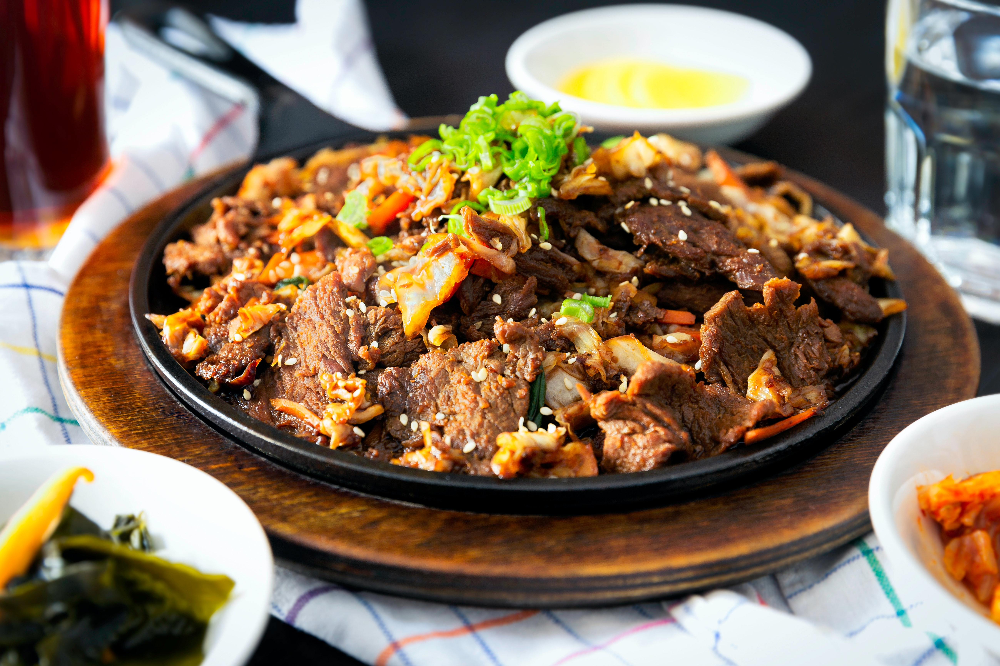

Chicken Stew
This chicken is a delicacy all across Kenya. Here's how to prepare it:
Ingredients
- Kienyeji chicken
- Garlic
- Onion
- Tomatoes
- Salt to taste
- Cooking oil
Procedure
- Boil the chicken with salt, garlic, and ginger until tender.
- In a pan, heat cooking oil until hot.
- Add your boiled chicken in batches. Fry until brown.
- In a separate sufuria (pot), fry the onion until it starts browning.
- Add the fried chicken and stir.
- Add blended tomatoes and cover the sufuria.
- Cook on low heat until the tomatoes are fully cooked.
- Add a little water and let it simmer for a few minutes.
- Garnish with dhania (coriander).
© 2023 Kenyan Meals
Crafted with ♥ your name